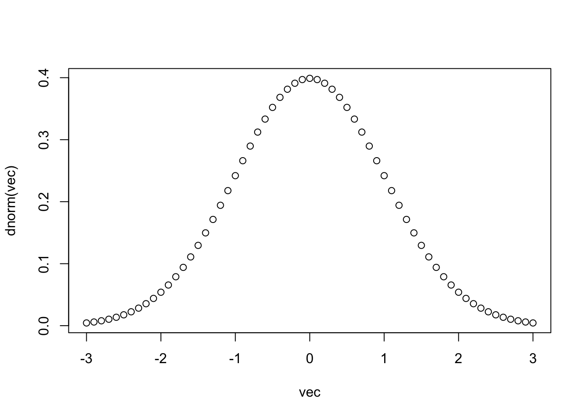
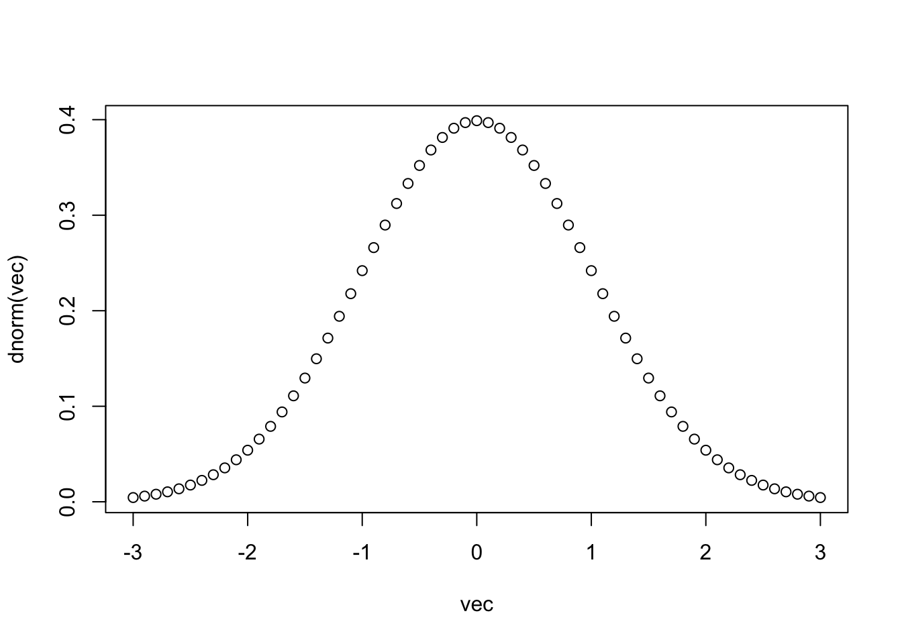
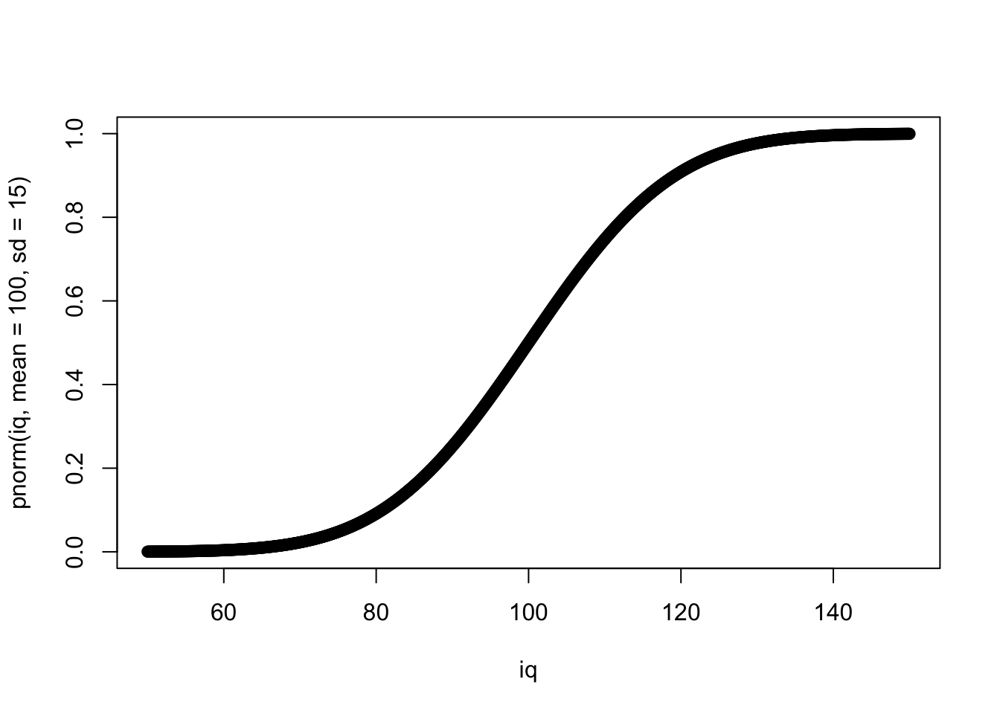
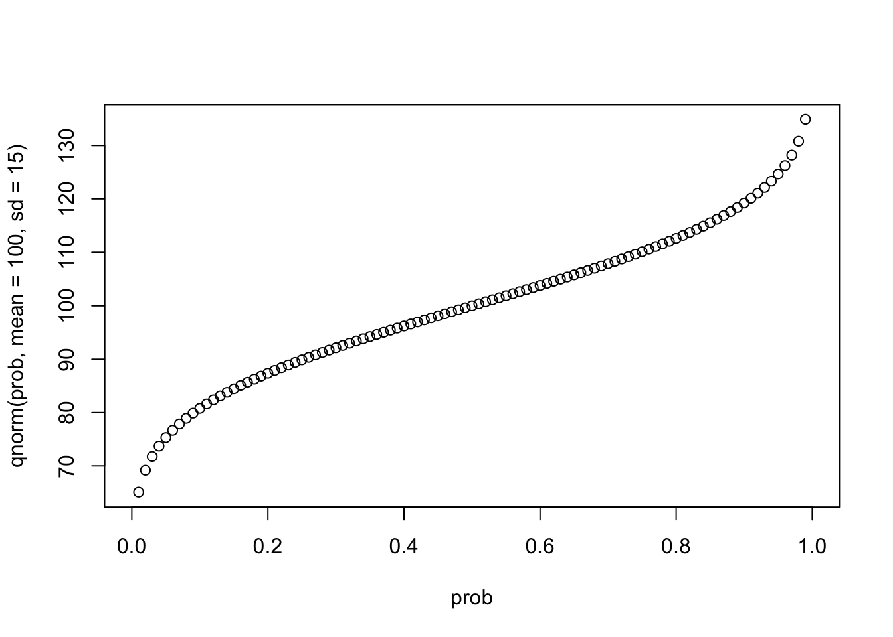
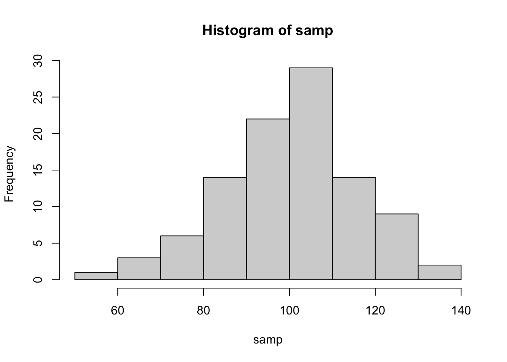
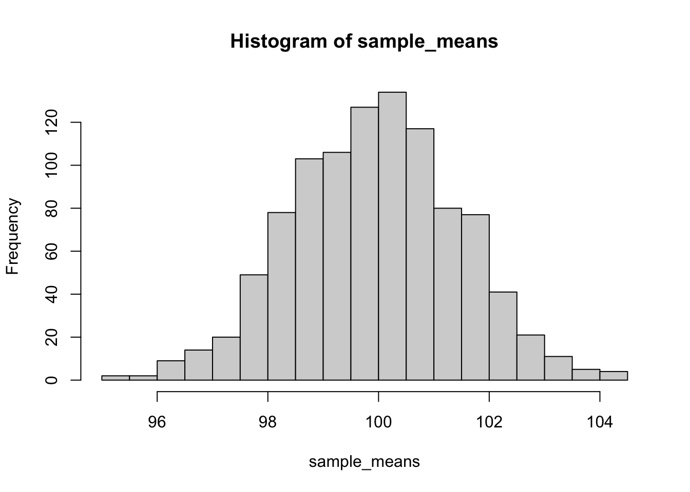
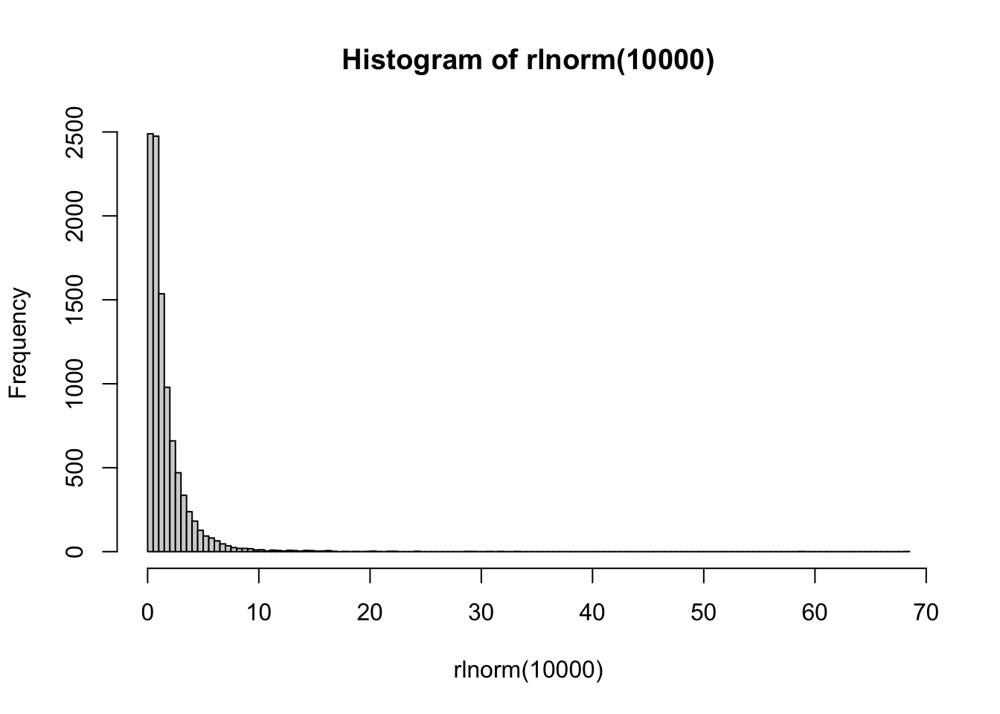
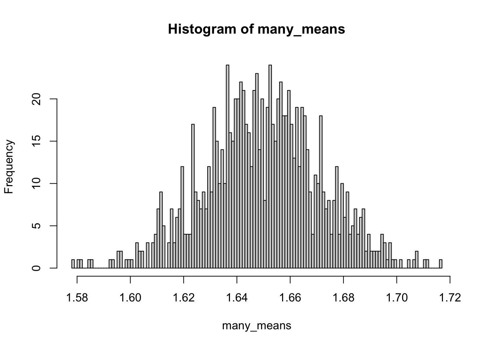
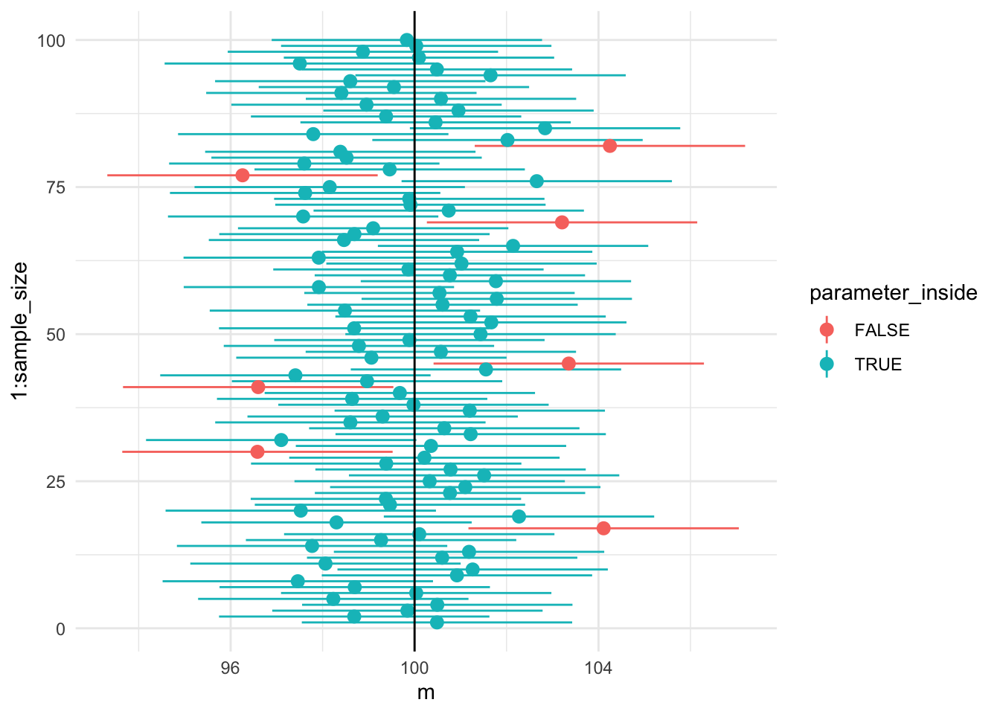
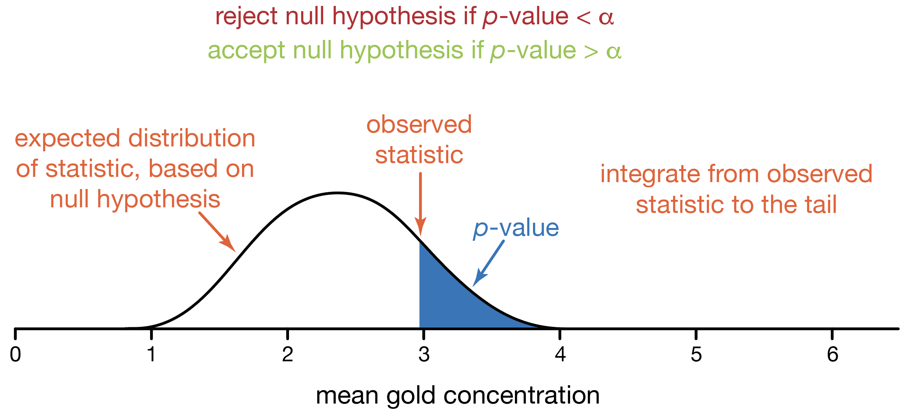

vec <- seq(-3,3, 0.1)
plot(vec,dnorm(vec))
Статистика вывода (inferential statistics) - это основной раздел статистики, связанный уже не с описанием и суммированием имеющихся данных (описательная статистика), а с попытками сделать вывод о генеральной совокупности (population) на основе имеющихся данных по выборке. Короче говоря, статистика вывода - это о том, как выйти за пределы наших данных. Это именно то, зачем мы проводим исследования - мы не можем собрать информацию обо всей генеральной совокупности, но по тому, что имеем (т.е. по нашей выборке), можем попытаться как-то оценить параметры распределения в генеральной совокупности.
Итак, еще раз: генеральной совокупности - параметры (Population - Parameters), а у выборки - статистики (Sample - Statistics). Параметры обычно обозначаются греческими буквами: \(\mu\), \(\sigma\) (или большими латинскими: \(M\), \(S\) ), а статистики - соответствующими латинскими: \(m\), \(s\).
Случайная переменная (random variable) – это переменная значения которой в зависимости от случая принимают различные значения. Представьте себе машину, которая по требованию выдает какое-то случайное число (или даже несколько). Это и будет случайная переменная. Какие это могут быть значения, какие-то конкретные или любые в каком-то диапазоне? Могут ли какие-то значения выпадать чаще других? Очевидно, случайные переменные могут быть разными в зависимости от закона, который стоит за тем, какие значения она может принимать и с какой частотой. Этот закон называется распределением вероятности.
Если случайная переменная может принимать только какие-то конкретные значения (например, 3, 10, 0.25 или число пи), то случайная переменная имеет дискретное распределение. Если же случайная переменная может принимать любые значения (в каком-то диапазоне или же вообще любые), то такая случайная переменная будет иметь непрерывное распределение. По большей части нас будут интересовать именно непрерывные. Хотя для полного их понимания нужен матан (да, именно тот, который calculus), непрерывные распределения довольно интуитивно понятны.
Может ли случайная переменная принимать значения с разной частотой? Если нет, то речь идет о равномерном распределении (uniform distribution). Пример случайной величины с дискретным равномерным распределением – игральный кубик, с вероятностью \(\frac{1}{6}\) возвращает одно из значений: 1, 2, 3, 4, 5 или 6. Однако равномерное распределение может быть как дискретным, так и непрерывным.
Все остальные распределения (кроме равномерного распределения) обозначают, что какие-то значения имеют больший шанс выпадения, чем другие. Разные распределения могут быть описаны с помощью функций распределения. В R есть свой набор из трех основных функций для каждого распределения и еще одна функция: генератор случайных чисел из выбранного распределения.
Вот эти функции:
d*() – функция вероятности (probability mass function) для дискретных распределений и функция плотности вероятности для непрерывных распределений.p*() – функция накопленной плотности распределения (cumulative distribution function; cdf)q*() – квантильная функция (quantile function), или обратная функция накопленной плотности распределения (inverse cumulative distribution function)Ну и функция r*() для создания случайных выборок из выбранного распределения.
Во всех четырех случаях, вместо звездочки нужно поставить название соотвествующего распределения в R. Таким образом, для каждого распределения в R есть четыре функции (с похожими названиями, различающимися первой буквой), и таких семейств функций в базовом R (точнее, во встроенном пакете {stats}) очень много. Вот лишь некоторые из них:

Скоро мы разберем их все.
Возьмем, например, нормальное распределение, и разберем на его примере все эти функции: dnorm(), pnorm(), qnorm() и rnorm().
Вот формула нормального распределения:
\[P(x) = \frac{e^{-(x - \mu)^{2}/(2\sigma^{2}) }} {\sigma\sqrt{2\pi}}\]
Для того, чтобы описать нормальное распределение нам нужно всего два параметра - его среднее \(\mu\) и стандартное отклонение \(\sigma\). Если же \(\mu = 0\), а \(\sigma = 1\), то такое нормальное распределение называется стандартным. Заметьте, здесь мы говорим о параметрах распределения в генеральной совокупности, а не о статистиках в конкретной выборке, хотя называются они одинаково.
Я думаю, все видели, как выглядит нормальное распределение. Это та самая “колоколообразная кривая”1.

То, что Вы видите на картинке - это так называемая функция плотности вероятности (probability density function). Это аналог probability mass function для дискретных величин - распределение вероятности того, что случайная величина имеет данное значение. Довольно очевидно, да? Тогда почему аналогичная функция для непрерывных распределений называется по-другому?
Дело в том, что вероятность получения конкретного значения для непрерывных величин равна нулю. Это немного необычный момент, но тем не менее: если распределение непрерывно, то получить точно 0,000000000000 с бесконечным количеством нулей после запятой невозможно, даже если среднее распределения равно нулю. Тем не менее, мы можем посчитать вероятность того, что случайное значение окажется в определенном промежутке. Чтобы посчитать эту вероятность, надо посчитать площадь соответствующего участка. Соответсвенно, площадь под всей функцией плотности вероятности равна 1.
Конечно, функцию плотности можно получить в R - это функции d*(), где * означает соответствующее распределение. Например, функция dnorm() для нормального распределения.
Функция dnorm() имеет следующие основные параметры: x = - вектор принимаемых значений, среднее и стандартное отклонение (mean = и sd =). В качестве параметров по умолчанию используются 0 для среднего и 1 для стандартного отклонения, то есть стандартное нормальное распределение. Для других распределений параметры будут отличаться (например, вместо mean = и sd = будет параметр df = – “степени совободы”).
Давайте посмотрим, как работает эта функция, визуализировав результат ее выполнения на вектор от -3 до 3 с небольшим шагом (0.1). С помощью базовой функции plot() мы построим диаграмму рассеяния, где по оси x используем исходный вектор с последвательностью от -3 до 3 с шагом 0.1, а по оси y – результат применения функции dnorm() на исходном векторе. Каждое отдельное значение – это плотность вероятности для конкретного значения x. Поскольку таких значений много, и они находятся близко друг к другу, то практически получается график кривой линии.
vec <- seq(-3,3, 0.1)
plot(vec,dnorm(vec))
Вот мы и получили то, что называем стандартным нормальным распределением, точнее, функцию плотности вероятности стандартного нормального распределения.
Давайте теперь возьмем другое нормальное распределение с другими параметрами. Например, среднее будет равно 100, а стандартное отклонение – 15. Это нормы для шкалы IQ:
iq <- seq(50,150, 0.1)
plot(iq, dnorm(iq, mean = 100, sd = 15))Шкала IQ — это вообще очень удобная шкала. Поскольку в измерениях интеллекта нет никаких объективных метрик (сантиметров, градусов, килограммов), с которыми его можно было бы сравнить, то единственная возможность дать какую-то оценку величины интеллекта у человека — сравнить его с интеллектом другого человека, например, по количеству решенных заданий за определенное время. Поэтому шкала IQ так сконструирована, чтобы среднее значение количество решенных заданий обозначалось за 100, а стандартное отклонение за 15. Поэтому по баллу IQ (если используется хороший тест, разумеется) можно понять процент людей, которых респондент опережает по интеллекту, по крайней мере, сравнивая с выборкой, на которой был стандартизирован тест. Примерно так же устроены и другие психологические шкалы.
Следующая функция это функция накопленной плотности распределения (cumulative distribution function; cdf) 2. Это функция очень важная, потому что именно на ней основано тестирование уровня значимости нулевой гипотезы, которым мы будем заниматься в дальнейшем. Она означает вероятность того, что полученное случайное значение из распределения будет меньше искомого или равно ему. Для этого используется функция pnorm().
plot(iq, pnorm(iq, mean = 100, sd = 15))
Какова вероятность того, что полученное случайное значение IQ будет меньше или равно 100?
pnorm(100, mean = 100, sd = 15)[1] 0.5А меньше или равно 130?
pnorm(130, mean = 100, sd = 15)[1] 0.9772499Следующая функция — это квантильная функция (quantile function), или обратная функция накопленной плотности распределения (inverse cumulative distribution function):
prob <- seq(0,1, 0.01)
plot(prob, qnorm(prob, mean = 100, sd = 15))
Обратная функция означает, что если мы применим сначала одну, а потом другую, то (если не берем особо крайних значений) на выходе получим исходные числа 3. Квантильная функция возвращает значение, которое по заданной вероятности случайная переменная не будет превышать. Поскольку квантильная функция – это функция от вероятности, квантильная функция определена на отрезке от 0 до 1.
qnorm(pnorm(-4:4))[1] -4 -3 -2 -1 0 1 2 3 4Ну и последняя важная функция - это rnorm() - просто генерирует выборку значений из данного распределения заданной длины n =:
set.seed(42)
samp <- rnorm(100, mean = 100, sd = 15)
samp [1] 120.56438 91.52953 105.44693 109.49294 106.06402 98.40813 122.67283
[8] 98.58011 130.27636 99.05929 119.57304 134.29968 79.16709 95.81817
[15] 98.00018 109.53926 95.73621 60.15317 63.39300 119.80170 95.40042
[22] 73.28037 97.42124 118.22012 128.42790 93.54296 96.14096 73.55255
[29] 106.90146 90.40008 106.83175 110.57256 115.52655 90.86610 107.57433
[36] 74.24487 88.23311 87.23639 63.78689 100.54184 103.08998 94.58414
[43] 111.37245 89.09943 79.47578 106.49227 87.82910 121.66152 93.52831
[50] 109.83472 104.82888 88.24242 123.63591 109.64349 101.34641 104.14826
[57] 110.18933 101.34749 55.10365 104.27324 94.49148 102.77846 108.72736
[64] 120.99605 89.09062 119.53814 105.03772 115.57759 113.81093 110.81317
[71] 84.35322 98.64720 109.35277 85.69715 91.85757 108.71495 111.52268
[78] 106.95651 86.71336 83.50329 122.69061 103.86882 101.32660 98.18655
[85] 82.08507 109.17995 96.74290 97.25865 114.00019 112.32660 120.88175
[92] 92.85739 109.75523 120.86666 83.33817 87.08811 83.02392 78.11179
[99] 101.19974 109.79807
set.seed()- это функция, которая позволяет получить нам воспроизводимые результаты при использовании генератора случайных чисел. Короче говоря, если все мы поставимset.seed(42)4, то одна и та же строчка выдаст нам один и тот же результат на разных компьютерах. Как это вообще возможно, это же случайные числа? Дело в том, что… нет. Они “псевдо-случайные”. На самом деле, используются определенные алгоритмы, чтобы генерировать числа, которые выглядят как случайные. Например, можно брать цифры после запятой в числе пи после, например, 42го знака. Реальные алгоритмы создания псевдо-случайных чисел, конечно, гораздо сложнее, но суть примерно такая. Насколько подобные числа действительно получаются случайными - отдельный сложный математический вопрос. Но для нас этого вполне достаточно.
hist(samp, breaks = 10)
Самая основа статистики вывода - это оценки. Как мы уже знаем, у распределений есть определенные параметры, которые описывают данное распределение.
Например, для того, чтобы описать нормальное распределение нам нужно всего два параметра - его среднее \(\mu\) и стандартное отклонение \(\sigma\).
Наша цель - как-нибудь оценить эти параметры, потому что обычно мы их не знаем. Допустим, человеческий рост распределен нормально [^isnotnormal]. Какой средний рост в популяции? Какое у него стандартное отклонение? Для этого мы используем разного рода оценки: точечные и интервальные. В качестве оценок параметров часто используются статистики по выборке. Вот здесь легко запутаться, поэтому покажу картинку:
[^isnotnormal]: На самом деле, “чистое” нормальное распределение, так же как и любое другое “чистое” распределение, в природе встречается достаточно редко. Но довольно многие процессы могут апроксимироваться нормальным распределением благодаря центральной предельной теореме Глава 16.8.
Представим, что только что сгенерированные данные с помощью rnorm() - это и есть наша выборка. Перед нами стоит задача оценить IQ популяции по этой выборке. Ну что, давайте попробуем оценить среднее. Здесь все просто и очень очевидно - самой лучшей оценкой среднего в генеральной совокупности будет среднее по выборке.
mean(samp)[1] 100.4877Конечно, не совсем точно, но лучше оценки не придумаешь. Что есть, то есть. Чем больше выборка, тем в ближе оценка будет к популяционному среднему. То есть чем больше выборка, тем выше точность оценки.
А что с оценкой стандартного отклонения? Давайте воспользуемся нашей предыдущей формулой.
\[s= \sqrt\frac{\sum\limits_{i=1}^{n} (x_{i} - \overline{x})^2} {n}\]
sqrt(sum((samp - mean(samp))^2)/length(samp))[1] 15.54206В данном случае мы несколько промахнулись вверх, но обычно оценка по этой формуле дает небольшое смещение (bias) в меньшую сторону. В отличие от выборочного среднего как оценки среднего в генеральной совокупности, использование выборочного стандартного отклонения по выборке приводит к смещенной оценке! Само по себе это кажется странным, и это нормально. Но этому есть всякие серьезные математические доказательства. Кроме того, есть множество всяких демонстраций, например, от Академии Хана.
Одно из простых объяснений такое: поскольку мы оцениваем стандартное отклонение на основе оценки среднего, среднеквадратичные расстояния счиаются не от реального среднего в генеральной совокупности, а от среднего по выборке, которое немного смещено в ту или иную сторону. Представьте, что так получилось, что в нашей выборке оно оказалось сильно смещено и выборочное среднее получилось около 90 (такое бывает). Это значит, что получилось много довольно низких значений около этого 90, а высчитываться среднеквадратичные разницы будут не от среднего 100 (которое мы не знаем), а от этого 90. Поэтому стандартное отклонение получится сильно меньше, чем должно было получиться.
Чтобы получить несмещенную (unbiased) оценку стандартного отклонения или дисперсии, то нам нужно делить не на \(n\), а на \(n-1\).
\[s= \sqrt\frac{\sum\limits_{i=1}^{n} (x_{i} - \overline{x})^2} {n-1}\] Заметьте, что именно так делает стандартная функция sd():
sqrt(sum((samp - mean(samp))^2)/(length(samp) - 1))[1] 15.62035sd(samp)[1] 15.62035Это называется поправкой Бесселя, и она настолько распространена, что именно скорректированное стандартное отклонение обычно называют стандартным отклонением. Поэтому в дальнейшем будет использоваться именно эта формула или же просто функция sd().
Таким образом, у оценки есть два критерия качества - ее точность и ее несмещенность.
Другой подход к оцениванию параметра распределения в генеральной совокупности заключается в использовании интервалов. Вместо того, чтобы дать одну оценку, которая будет заведома неточна, можно попробовать оценить интервал, в котором находится истинное среднее генеральной совокупности.
Самая распространенная интервальная оценка называется доверительным интервалом (confidence interval). Цель доверительного интервала - “покрыть” параметр генеральной совокупности с определенной степенью уверенности.
Например, 95% доверительный интервал или просто \(CI95\%\) означает, что примерно в 95% случаев подсчитанный на выборках интервал будет ловить значение параметра в популяции. Например, построив \(CI95\%\) по нашей сгенерированной выборке, мы хотим чтобы примерно в 95% случаев выборок, построенных таким способом, этот интервал ловил истинное среднее (в данном случае — 100).
Для того, чтобы научиться строить такие интервалы, нам нужно разобраться с выборочным распределение (sampling distribution).
Чтобы разобраться с тем, что стоит за доверительными интервалами и тестированием уровня значимости нулевой гипотезы (короче говоря, с основными инструментами статистики вывода), нам надо разобраться с очень абстрактной концепцией – выборочными распределениями.
Представьте себе, что мы бы выбрали не одну, а сразу много выборок, а потом у каждой выборки посчитали бы среднее. Мы бы получили новый вектор данных - средние выборок из одного распределения. Давайте это сделаем 5.
samplemeans <- replicate(1000, mean(rnorm(100, mean = 100, sd = 15)))Каждая выборка состоит из сотни “испытуемых”, всего таких выборок 1000. По каждой мы посчитали среднее.
Как распределены эти средние?
hist(samplemeans, breaks = 30)
Вот это распределение и есть выборочное распределение средних. Точнее, было бы, если бы мы взяли не 1000 выборок, а бесконечное количество выборок. Так что у нас всего лишь апроксимация. При этом мы могли взять другие статистики, не средние выборок, а, например, медианы или стандартные отклонения выборок. Тогда это были бы выборочные распределения медиан и выборочные распределения стандартных отклонений. Но именно выборочное распределение средних обладает уникальными математическими свойствами, про которые мы скоро узнаем.
Среднее выборочного распределения средних будет близко к популяционному среднему:
mean(samplemeans)[1] 99.93772А вот чему будет равно стандартное отклонение средних?
sd(samplemeans)[1] 1.501392Очень похоже на стандартное отклонение IQ, но в 10 раз меньше. В действительности, стандартное отклонение выборочного распределения средних равно стандартному отклонению в генеральной совокупности, деленному на корень из размера выборки.
\[\sigma_{\overline{x}}= \frac{\sigma} {\sqrt{n}}\] Как раз это мы и получили: размер нашей выборки - 100, а корень из 100 равен 10.
Стандартное отклонение выборочного распределения средних (ох, йо) называется еще стандартной ошибкой или standard error of the mean (s.e.m.). Именно стандартную ошибку обычно используют на графиках в качестве error bars. Теперь вы знаете как ее посчитать!
sem <- 15/sqrt(length(samp))
sem[1] 1.5Ну а если мы не знаем стандартного отклонения в генеральной совокупности (что обычно и бывает в жизни), то можем оценить стандартную ошибку среднего с помощью оценки стандартного отклонения, посчитанного на выборке:
\[s_{\overline{x}}= \frac{s} {\sqrt{n}}\]
sd(samp)/sqrt(length(samp))[1] 1.562035Это означает, что стандартная ошибка тем меньше, чем больше выборка. И это довольно логично: чем больше у нас размер выборок, тем меньше будет расброс их средних.
В математике все числа равны, но некоторые все-таки заметно равнее других. Например, есть 0 и 1 - и очевидно, что это очень важные числа. Даже гугл выдает больше страниц по числам 0 и 1, чем по другим числам, например, 8 и 23218974. Не только целые числа могут быть важными. Вот, например, число пи и число Эйлера: они очень часто встречаются в самых разных, подчас неожиданных местах. Например, в тех же формулах распределений. На эти числа завязано очень интересные и важные свойтсва, поэтому такая зацикленность на них неудивительна. Например, число пи связывает радиус круг с длиной его окружности и площадью, поэтому когда перед нами что-то круглое, то и пи появится с большой вероятностью.
В статистике тоже есть распределения, которые “главнее” других распределений. Есть, например, равномерное распределение. Например, равномерно распределены исходы одного броска кубика.
Но есть и распределение, которое смело можно называть королем всех распределений - это уже знакомое нам нормальное распределение.
Нормальное распределение - это что-то в духе единицы из мира распределений. Это не просто одно из распределений, а это фундаментально важная штуковина, которая обладает почти магической силой. И сила эта зовется “Центральная Пределельная Теорема”.
Давайте теперь сделаем много выборок не из нормального, а из логнормального распределения. Что-то похожее представляет собой распределение времени реакции на многие задачи (особенно связанные с выбором и когда нужно подумать перед нажатием кнопки). Одна выборка будет распределена примерно так:
hist(rlnorm(10000), breaks = 100)
Распределение сильно ассиметрично, но его форма примерно понятна.
А как будут распределены средние многих выборок, взятых из логнормального распределения? Хочется сказать, что так же, но нет!
many_means <- replicate(1000, mean(rlnorm(10000)))
hist(many_means, breaks = 100)
Удивительно, но средние по выборкам из логнормального распределения будут выглядеть почти нормально! Более того, для других распределений это тоже будет верно: согласно центральной предельной теореме (ЦПТ, central limit theorem), какой бы ни была форма распределения в генеральной совокупности, выборочное распределение средних будет стремиться к нормальному. При этом чем больше размер выборки, тем ближе выборочное распределение средних будет к нормальному. Это очень важная фишка, на которой основаны многие статистические тесты.

Не верите? Попробуйте сами! Можете поиграться с разными распределениями с помощью кода (можете посмотреть другие распределения в хэлпе: ?Distributions ).
Можете поиграться с интерактивной Shiny-демонстрацией магии ЦПТ. Я очень и очень рекомендую поиграться с ней. Попробуйте разные значения, посмотрите что будет.
Как только наиграетесь, то сразу станет понятно, почему именно нормальное распределение занимает такое важное место в статистике.
Если выходить за рамки выборочного распределения средних, то центральная предельная теорема говорит нам о том, что сумма слабо зависящих случайных величин, имеющих примерно одинаковое влияние, имеет распределение близкое к нормальному. Например, рост является следствием большого количества генетических и средовых факторов, поэтому он распределен примерно нормально. Однако это нормальное распределение портят такие факторы как пол — он вносит очень сильный вклад в рост, поэтому распределение становится немного “двугорбым”.
Теперь мы знаем достаточно, чтобы построить доверительный интервал своими руками на основе стандартной ошибки. Мы построим самый стандартный вариант - 95% доверительный интервал.
Давайте еще раз посмотрим на нормальное распределение.
Мы хотим поймать симметрично 95% от площади под кривой. Для этого нам нужно отбросить по 2.5% с обоих сторон. Эти 2.5% соответствуют примерно двум стандартным отклонениям от среднего. Если быть точнее, то 1.96. Если быть еще точнее:
qnorm(0.975)[1] 1.959964Почему 0.975? Потому что мы смотрим квантильную функцию по верхней границе: отсекаем правые 0.025:
qnorm(1 - (1 - 0.95)/2)[1] 1.959964Давайте сохраним это число. Назовем его zcr:
zcr <- qnorm(1 - (1 - 0.95)/2)Это количество стандартных отклонений от среднего в нормальном распределении, которое включает в себя ровно 95% площади нормального распределения. Теперь давайте посчитаем стандартную ошибку. Здесь мы знаем стандартное отклонение в генеральной совокупности (это 15), его поделим на корень из размера выборки:
sem <- 15/sqrt(length(samp))Чтобы посчитать нижнюю и верхнюю границы доверительного интервала, нам нужно вычесть и прибавить соответственно нужное количество стандартных ошибок:
mean(samp) - sem*zcr #нижняя граница[1] 97.54778mean(samp) + sem*zcr #верхняя граница[1] 103.4277Давайте теперь нарисуем сотню доверительных интервалов с помощью ggplot2! Цветом обозначим интервалы, которые не поймали истинное значение параметра в центральной совокупности.
library(tidyverse)── Attaching packages ─────────────────────────────────────── tidyverse 1.3.2 ──
✔ ggplot2 3.4.0 ✔ purrr 1.0.1
✔ tibble 3.1.8 ✔ dplyr 1.1.0
✔ tidyr 1.3.0 ✔ stringr 1.5.0
✔ readr 2.1.3 ✔ forcats 1.0.0
── Conflicts ────────────────────────────────────────── tidyverse_conflicts() ──
✖ dplyr::filter() masks stats::filter()
✖ dplyr::lag() masks stats::lag()sample_size <- 100
set.seed(42)
ci_simulations <- tibble(
m = replicate(sample_size, mean(rnorm(sample_size, mean = 100, sd = 15))),
se = 15/sqrt(sample_size),
lower = m - se*zcr,
higher = m + se*zcr,
parameter_inside = lower<100 & higher>100
)many_ci_gg <- ggplot(data = ci_simulations, aes(x = 1:sample_size,y = m)) +
geom_pointrange(aes(ymin = lower,ymax = higher,colour = parameter_inside))+
geom_hline(yintercept = 100)+
coord_flip() +
theme_minimal()
many_ci_gg
Примерно 5% не ловят 100 в 95% доверительный интервал! Примерно это и означает доверительный интервал: где-то в 95% он ловит параметр в генеральной совокупности, а в 5% - нет.
Понятие доверительного интервала вызывает кучу недопонимания и ошибок. Очень многие его интерпретируют, например, как интервал, включающий в себя 95% значений популяции, но это неправильно.
Еще я советую посмотреть вот эту визуализацию:
Тестирование значимости нулевой гипотезы (null hypothesis significance testing) — это основной подход в статистике вывода. Вы про него точно слышали (хотя, возможно, не знали, что он так называется), потому что де-факто он является стандартом в психологии, биологии, медицине и многих других науках.
Мы сейчас детально его проведем на примере одного из самых простых статистических тестов - z-тестов. Однако та же самая логика стоит и за остальными статистическими тестами.
1. Формулирование нулевой и альтернативной гипотезы.
Сначала мы задаем две гипотезы о параметрах распределения. Одна из них называется нулевой: она обычно включает положение о том, что различий или связи нет или что это различие/связь равно определенному числу. Если мы хотим применить тестирование значимости к нашей “выборке”, то нулевую гипотезу можно будет сформулировать так: \[H_0: \mu = 100\]. Альтернативная или ненулевая гипотеза либо говорит о том, что среднее в генеральной совокупности на самом деле не равно какому-то конкретному числу (в нашем случае — 100) или что две выборки взяты из групп с различным средним и т.п.
\[H_1: \mu \ne 100\]
Тестирование нулевой гипотезы предполагает подсчет какой-то статистики, а потом вычисление того, какова вероятность получить такой или более радикальный результат при условии, что верна нулевая гипотеза.
Заметьте, мы формулируем гипотезу не про статистики в выборке, а про параметры в генеральной совокупности, поэтому пользуемся греческими (или большими латинскими) буквами.
Вся дальнейшая логика расчетов будет строиться именно на нулевой гипотезе: мы будем пытаться понять, насколько реалистичны наши результаты при верности нулевой гипотезы, которую мы заранее обозначили. Это похоже на “доказательство от обратного” в геометрии: мы исходим из того, что эффекта не существует и пытаемся прийти к противоречию с данными, чтобы отбросить эту нулевую гипотезу и принять альтернативную гипотезу.
2. Подсчет тестовой статистики по выборке
Следующий этап тестирования значимости нулевой гипотезы — подсчет тестовой статистики. Тестовые статистики по своей сути не отличаются от описательных статистик, с которыми мы уже познакомились, но имеют другую функцию. Как и в случае описательных статистик, мы пытаемся выразить информацию о выборке в виде одного числа, но делаем это для того, чтобы сравнить это значение с другими возможными значениями, которые мы могли бы получить, если бы наша нулевая гипотеза была верна.
Если мы знаем стандартное отклонение в генеральной совокупности, то можем посчитать \(z\)-статистику по формуле:
\[z = \frac{\overline{x} - \mu} {\sigma / \sqrt{N}} \]
m <- mean(samp)
sem <- 15/sqrt(length(samp))
z <- (m - 100)/sem
z[1] 0.3251482\(z\)-статистика — это выборочное среднее, из которого вычтено среднее в генеральной совокупносности согласно нашей гипотезе. Получившуюся разницу мы делим на стандартную ошибку.
3. Расчет p-value
И вот мы подобрались к самому важному этапу – расчет p-value. p-value – это вероятность получить такую и более отклоняющуюся тестовую статистику при условии верности нулевой гипотезы. Очень важно понять, как именно оно расчитывается, потому что на этом основывается сама идея тестирования значимости нулевой гипотезы! Для этого нам нужно вернуться к идее выборочного распределения, только теперь уже не среднего, а \(z\)-статистики. Впрочем, выглядеть оно будет абсолютно так же – нормально! Благодаря тому, что мы вычли среднее и поделили на стандартное отклонение, среднее этого нормального распределения будет равно 0, а стандартное отклонение – 1. То есть перед нами снова стандартное нормальное распределение.
Благодаря ЦПТ, даже если распределение в генеральной совокупности несколько отличается от нормального, а выборка достаточно большая, то выборочное распределение z-статистик при верности нулевой гипотезы будет (примерно) нормальным.
Теперь нам нужно соотнести нашу \(z\)-статистику с теоретическим выборочным распределением \(z\)-статистик. Это позволит нам оценить вероятность получить такие и более отличающиеся результаты при допущении верности нулевой гипотезы, т.е. p-value.
Какая вероятность получить \(z\)-статистику 0.3251482, если на самом деле нулевая гипотеза верна? Это вопрос с подвохом: как мы выяснили ранее, для непрерывных распределений вероятность получить отдельное число равна 0. Но мы можем посчитать, какая вероятность получить такую же или большую \(z\)-статистику!
Графически эту вероятность можно представить как площадь под кривой функции плотности распределения от полученной \(z\)-статистики до плюс бесконечности или от минус бесконечности до полученной \(z\)-статистики, если \(z\)-статистика отрицательная.
 Или же можем воспользоваться функцией накопленной плотности распределения. Для нормального распределения это можно сделать с помощью уже знакомой нам функции pnorm():
pnorm(z)[1] 0.6274655pnorm() считает от минус бесконечности до заданного числа, а нам нужно наоборот — от заданного числа до плюс бесконечности, потому что \(z\) отличается от 0 в большую сторону. Этого можно добиться вычетанием из 1 6:
1 - pnorm(z)[1] 0.3725345Обычно это число еще и умножают на 2, потому что мы заранее не знаем, в какую сторону будет отклоняться среднее по нашей выборке. Вернемся к шагу 1: мы сформулировали ненулевую гипотезу таким образом, что среднее генеральной совокупности не равно 100:
\[H_1: \mu \ne 100\]
Это означает, что \(H_1\) включает в себя как случаи, когда среднее отклоняется в большую сторону, так и случаи когда среднее отклоняется в меньшую сторону.
p <- (1 - pnorm(z))*2
p[1] 0.7450689Вот эта число и есть p-value — вероятность получения такого же и более экстремального значения тестовой статистики при условии, что нулевая гипотеза верна.
4. Принятие решения о гипотезах
Отлично, мы посчитали p-value. В данном конкретном случае он оказался равен 0.7450689. Это много или мало? Фактически это означает, что если нулевая гипотеза верна, то в большинстве случаев мы будем получать z-статистики больше нашей. Короче говоря, это вполне реалистичный случай, если нулевая гипотеза верна.
Значит ли это, что нулевая гипотеза верна? Нет, не значит. При тестировании значимости нулевой гипотезы мы в принципе ничего не можем сказать про верность альтернативной гипотезы. Например, возможно, настоящее среднее в генеральной совокупности, из которой мы взяли выборку, очень мало отличается от 100.
Поэтому если p-value достаточно большой, мы не можем сделать выводов про верность нулевой и альтернативной гипотезы. Мы можем лишь сказать, что у нас нет оснований отклонить нулевую гипотезу.
Если же p-value очень маленький, то здесь у нас появляется больше однозначности. Например, если p-value равен .02, мы можем сказать, что ситуация малореалистичная: такие и более сильные отклонения от среднего мы можем получить только раз в 50 случаев, если \(H_0\) верна. Поэтому мы отклоняем \(H_0\) и принимаем \(H_1\).
Насколько маленьким должен быть p-value, чтобы отклонить нулевую гипотезу? Критическое значение p-value, при котором отклоняют нулевую гипотезу, называется уровнем \(\alpha\). Это максимальный уровень ошибки, который мы допускаем в исследовании.
Так получилось исторически, что стандартный уровень \(\alpha\) равен .05. Нужно помнить, что .05 — это просто общепринятая условность, за этим числом не стоит никакого сакрального знания. Просто так получилось.
Очевидно, что такой статистический подход к принятию решений будет периодически приводить к нас ошибкам. Если \(H_0\) на самом деле верна, а мы ее отвергли и приняли \(H_1\), то это ошибка первого рода (type I error). Вероятность этой ошибки и есть наше критическое значение \(\alpha\). Однако есть вероятность ошибиться и в другую сторону, т.е. ошибочно не отклонить \(H_0\) — это ошибка второго рода (type II error), эта вероятность обозначается буквой \(\beta\).
| Принятое решение Реальность | \(H_0\) верна | \(H_1\) верна |
|---|---|---|
| Не отклоняем \(H_0\) | Верный пропуск | Ошибка 2 рода (type II error) |
| Отклоняем \(H_0\) | Ошибка 1 рода (type I error) | Верное попадание |
Если распределение имеет колоколообразнуюю форму, то это еще не значит, что оно нормальное. Есть очень много похожих по форме распределений, которые, тем не менее, значительно отличаются от нормального, в том числе своими свойствами. Например, распределение Коши тоже внешне похоже на колокол, но у него нет среднего и стандартного отклонения!↩︎
Иногда эта функция называется интегральной функцией вероятности, а иногда просто функцией вероятности. Последний вариант может запутать, потому что часто под функцией вероятности подразумевают функцию плотности вероятности.↩︎
Если мы возьмем достаточно большие значения, то этот трюк не сработает, что свзязано с тем, что числа дробные числа в компьютерах хранятся с ограниченной точностью.↩︎
А почему именно 42? Ну, можно брать любое число, которое Вам нравится. А 42 - это ответ на главный вопрос жизни, вселенной и всего такого↩︎
Конечно, на практике никто не будет собирать тысячу выборок. Но нам важно понимать, чтобы было, если бы мы повторяли один и тот же эксперимент в одинаковых условиях, даже если это и невозможно сделать. Это позволит нам понять, какие выводы мы можем сделать на основе тех данных, что мы имеем на самом деле.↩︎
или же можно поставить параметру lower.tail = функции pnorm() значение FALSE.↩︎